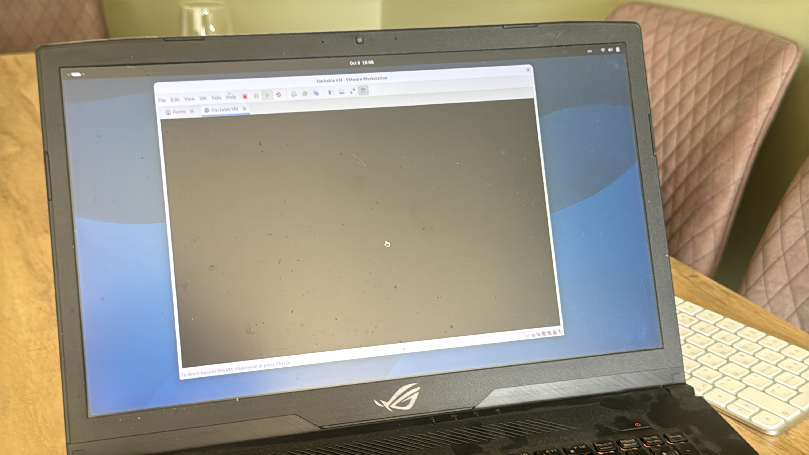

ASUS ROG Strix
הייתי צריך אותו לקורס אחד
לקורס מבוא לאבטחת מידע יש דרישה מעצבנת למדיי — צריך מחשב עם מעבד בארכיטקטורת אינטל על מנת להריץ את המכונות הוירטואליות שמסופקות בו! כתוצאה מכך, הייתי חייב לשלוף מהבוידעם את המחשב הנייד הבא. לאחר התקנת לינוקס, היה טיפה סיוט לגרום לכך שהמקלדת תעבוד לאחר הפעלה...
מפרט
- דגם
- ASUS ROG Strix
- מעבד
- Intel Core i7-8750H
- מעבד גרפי
- NVIDIA GTX 1070
- זיכרון
- 32 GB
- כונן SSD
- 256 GB
- כונן HDD
- 1024 GB
- מערכת הפעלה
- Debian GNU/Linux 13.7
- סביבת שולחן עבודה
- GNOME
